# uncomment this line if you haven't installed this package yet,
# then comment or delete this line after you successfully install
# install.packages("tidyverse")Scatterplots in R
What’s in this tutorial?
The main goal of this tutorial is to present and explain the code for creating scatterplots.
As a bonus, this will also show you an example of using the dplyr package to compute aggregated values. We will use aggregated values to create a plot where the size of the “dots” reflects the number of observations at a particular coordinate, which is a possible strategy for managing overplotting.
Loading data and packages
The Tidyverse
We will use the ggplot2 package, as well as the dplyr package. These packages belong to a set of packages that were designed by influential R developer Hadley Wickham referred to as the “tidyverse.” The tidyverse packages do things differently than similar functions in base R, but they have a consistent approach and they are extremely useful and powerful. Using tidyverse packages is almost like a “dialect” of R – some people almost exclusively use them, other people avoid them, but most people use a mix.
There is also a “meta-package” called tidyverse, which is essentially just a package that loads all of the packages in the tidyverse. It’s not necessary, it’s just a convenience, because for people who like these packages, it’s common to load many of them, so it’s just nice to load tidyverse and have most of what you need. Let’s make use of that convenience. So if you haven’t already, run the code to install the tidyverse:
The convenience is that when you install this package, it installs all of the tidyverse packages, and when you load it with library, it loads all of those same packages. So if you want to use more than one of them, it can be handy to just load the whole tidyverse.
library(tidyverse) # this loads ggplot2, dplyr, and others── Attaching core tidyverse packages ──────────────────────── tidyverse 2.0.0 ──
✔ dplyr 1.1.4 ✔ readr 2.1.5
✔ forcats 1.0.0 ✔ stringr 1.5.1
✔ ggplot2 3.5.2 ✔ tibble 3.2.1
✔ lubridate 1.9.4 ✔ tidyr 1.3.1
✔ purrr 1.0.4
── Conflicts ────────────────────────────────────────── tidyverse_conflicts() ──
✖ dplyr::filter() masks stats::filter()
✖ dplyr::lag() masks stats::lag()
ℹ Use the conflicted package (<http://conflicted.r-lib.org/>) to force all conflicts to become errorsThe tidyverse packages also have some nice online documentation, which includes tutorials, cheatsheets, etc:
Load the Pearson & Lee (1903) data
In this tutorial, we’ll look at a subset of the data from Pearson & Lee (1903), which is described in the Unit 3 reading. This data is derived from the PearsonLee data set found in the HistData package.
I’ll actually describe the code I used to reformat the PearsonLee data frame in a separate tutorial because it demonstrates a few other tools, but for the purposes of the current tutorial, I encourage you to just download the following CSV file:
https://scottrjackson.githib.io/inst314_summer/FatherSonHeights.csv
I’m naming the variable pl to stand for Pearson & Lee.
pl <- read.csv("FatherSonHeights.csv")
head(pl) observation father_height son_height
1 1 62.5 59.5
2 2 62.5 59.5
3 3 63.5 59.5
4 4 63.5 59.5
5 5 64.5 59.5
6 6 64.5 59.5This data should have 4,312 rows and three variables, though the observation variable is just an arbitrary number matching the row number.1
1 Data frames in R have row numbers, and these can be useful, but sometimes when you are reshaping data, it can be helpful to have some kind of ID or observation column as well.
Basic scatterplot
The first step is just the basic scatterplot. Since we are using ggplot2, starting this plot looks a lot like starting a histogram or density plot, because we still use the ggplot function to specify what data frame to pull data from, and what columns we want to plot. But where a histogram only has an x dimension, a scatterplot has an x and a y.
Then, it’s just a matter of picking the shape or “geom” that we want to plot. In ggplot2, the typical geom to use for scatterplots is geom_point.
ggplot(data = pl, aes(x = father_height, y = son_height)) + geom_point()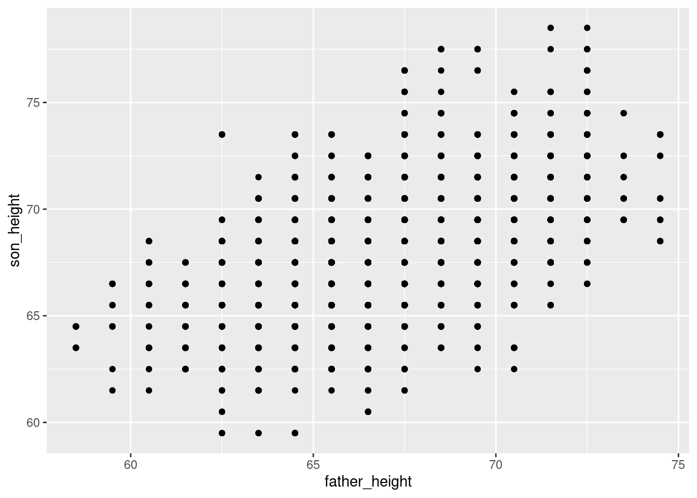
As a small aside, x and y are the default arguments of aes, so if we wanted to be a little lazier, the following code does the same as above:
ggplot(pl, aes(father_height, son_height)) + geom_point()
Jittered scatterplots
In the reading, we discussed overplotting, and how one strategy to get around overplotting is to “jitter” the points by adding small random values to the values we’re plotting. There are a few ways to do this in ggplot2. The simplest one is to replace geom_point() with geom_jitter().
ggplot(pl, aes(father_height, son_height)) + geom_jitter()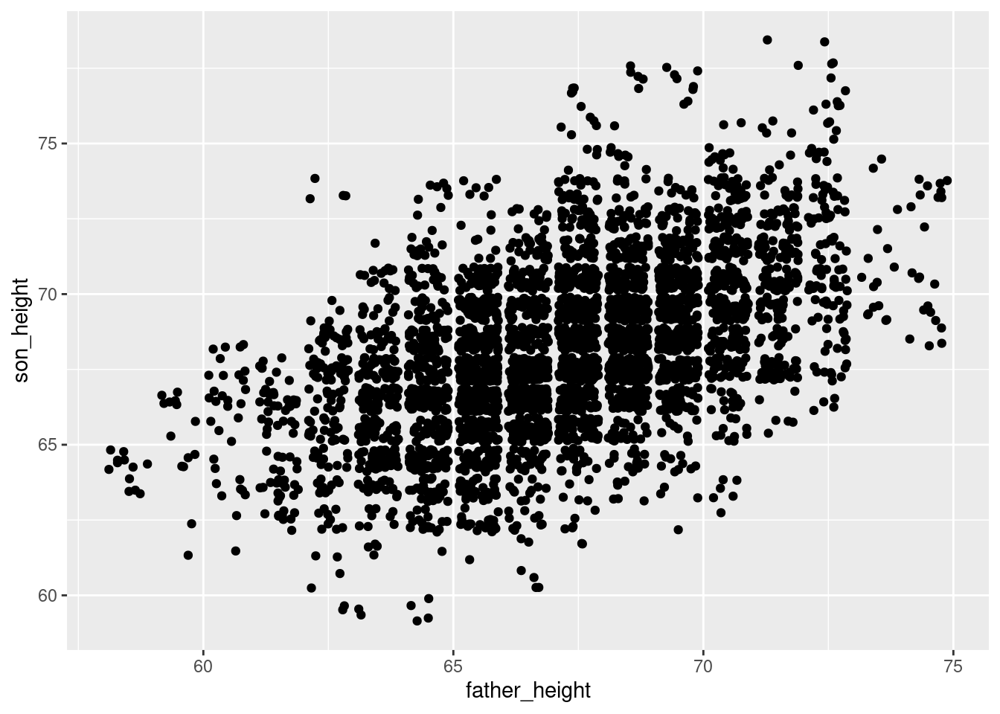
Another way to do the same thing is by manipulating the position argument of geom_point():
ggplot(pl, aes(father_height, son_height)) + geom_point(position = "jitter")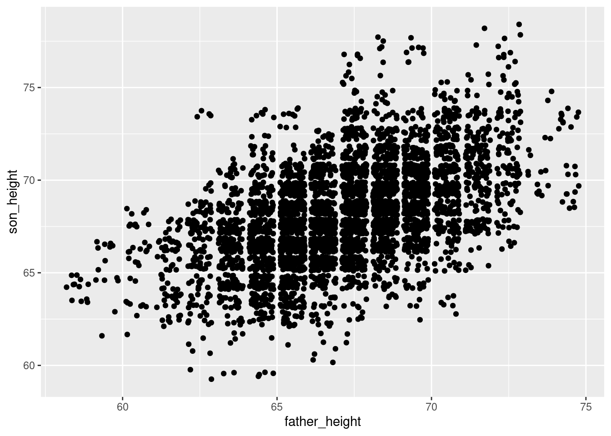
Note that because jitter means adding random noise, the plot will look slightly different each time you generate the plot. So if you would like to produce a consistent plot, you will need to use set.seed(), the standard R function used to set a consistent “state” in R’s pseudo-random number generator. For example, the following plot will always look the same, because of set.seed():
set.seed(183)
ggplot(pl, aes(father_height, son_height)) + geom_jitter()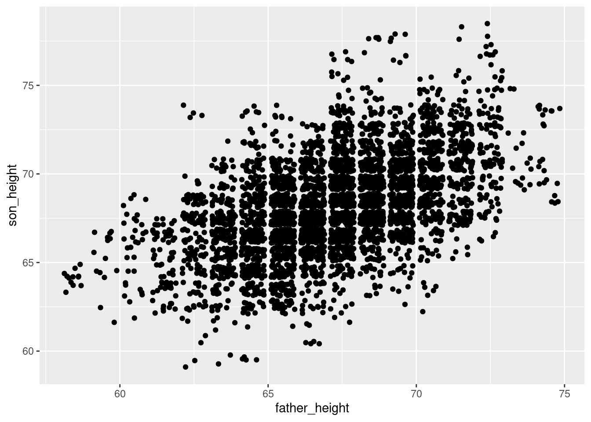
A final note about geom_jitter: controlling the degree of jitter. The documentation2 describes how you can control the amount of jitter using the height and width parameters, which specify how far points can be displaced on the y and x axes, respectively. The default is “40% of the resolution of the data.” So for example, the data points in our graph here are all 1 unit apart in both dimensions, so by default, geom_jitter() will displace points plus or minus 0.4 units on the x and/or y axes. This is why you will see “bins” of data appear in a jitter plot, because with a 40% jitter, points won’t be jittered so far as to overlap with points that represented different values in the unjittered data.
2 Remember that you can always check documentation directly in R, in this case by running the code ?geom_jitter
So for example, we could decide to jitter all of the points by up to 2 units (2 inches in the present data) horizontally and vertically using:
ggplot(pl, aes(father_height, son_height)) + geom_jitter(height = 2, width = 2)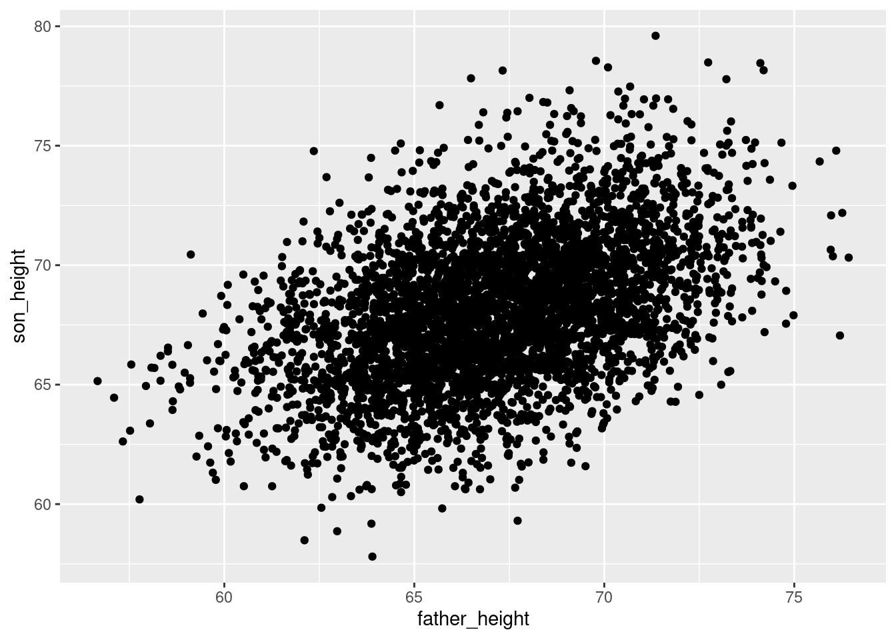
But jittering points by +/- 2 inches might not be a good idea for visualizing the data faithfully!
The bottom line is that the default settings for geom_jitter() are usually good for what you need, but if you ever want to modify those, you can.
Manipulating transparency
Another useful strategy for dealing with overplotting is to adjust the transparency of the things you’re plotting. This can be helpful in lots of different kinds of plots, so it’s a general property you can adjust for many different geoms. The property is called alpha, and it’s more like a measure of how opaque something is, from 0 to 1, like a proportion. So an alpha of 0 means 0% opacity, which just makes it invisible. On the other end, an alpha of 1 means 100% opacity, which is the default.
In practice, I usually start with an alpha around 0.5 (since it’s halfway) and then play around with the values from there. In the case of this data, since there’s so much overplotting, a lower value is probably a little better. But I encourage you to adjust the alpha value up and down in the code below to see how it changes.
ggplot(pl, aes(father_height, son_height)) + geom_jitter(alpha = 0.2)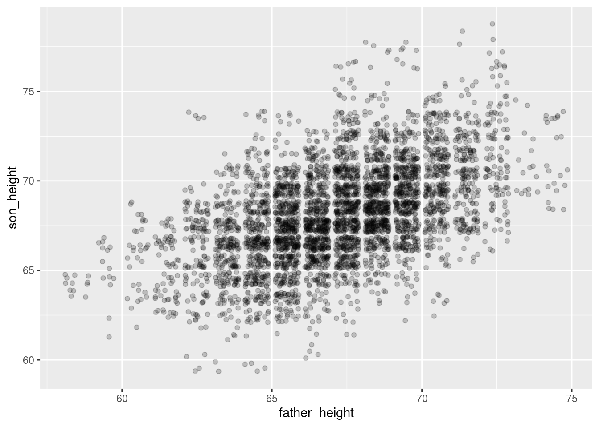
Changing shape
A third less-common strategy is to actually alter the shape of the points being plotted. In ggplot2, the default shape for a point is a small filled circle. However, especially before color graphics were common in publications, a wide variety of shapes were used to distinguish different subsets of data in a visualization.
For our purposes here, it turns out that an “empty circle” shape is actually an excellent shape for helping to deal with overplotting, and can be used in conjunction with jittering and/or transparency as well.
For example, the following is a jittered set of points that use open circles. Compare this to the graph above that used transparency (alpha).
ggplot(pl, aes(father_height, son_height)) + geom_jitter(shape = 1)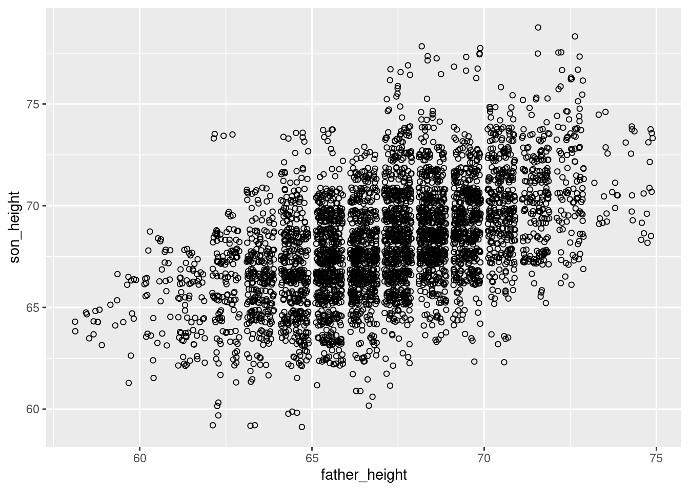
Since the circles are unfilled, it inherently adds an element of “transparency”, where points that overlap slightly are more distinguishable, and less likely to look like a shapeless “blob.” This effect is improved even further with lowering alpha as well:
ggplot(pl, aes(father_height, son_height)) + geom_jitter(shape = 1, alpha = .2)As one final improvement to this graph, we can adjust the theme of the graph to make the background white, so that these very light circles are easier to see. More about theme is discussed in a later section below.
ggplot(pl, aes(father_height, son_height)) + geom_jitter(shape = 1, alpha = .2) +
theme_classic()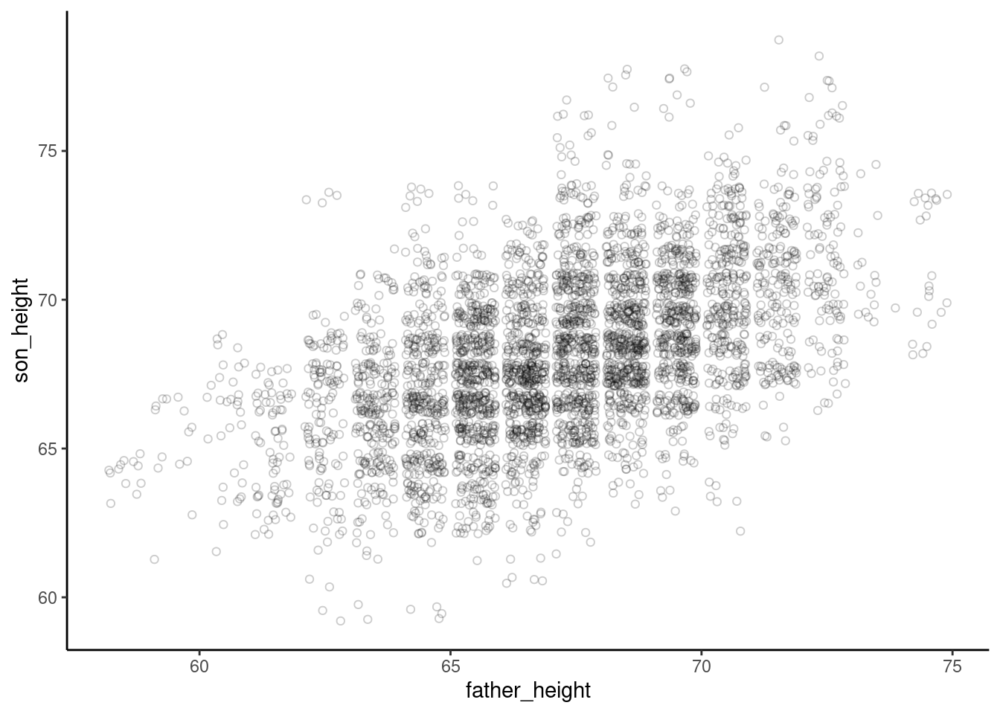
Side-topic: aggregation
Aggregating and manipulating data isn’t strictly a graphing topic, but it is extremely useful when you are visualizing data, because if you know how to manipulate your data in different ways, you can set up different visualizations.
To illustrate, let’s revisit the overplotting issue we are seeing in the graphs so far. Recall that there are many data points that overlap. This is simply because many of the rows of data have essentially the same numbers. For example, there are many rows – which nevertheless represent different father-son pairs – where the value for father_height is 67.5 and the value for son_height is 68.5. So if we plot a dot for each of those rows, they are plotted on top of each other, which is the “overplotting” pattern we are trying to address in the plots above. This is bad because it “hides” a lot of the data from us when we just plot a simple scatterplot without all the tricks like jittering discussed above.
So what if we reduced things down so that we just had one row of data for each of the different combinations of father/son heights? Well, we would lose a lot of data. What information would we lose exactly? We’d lose the count of how many father-son pairs are represented by those values. Therefore, what we want is a way to reduce down the number of rows to just the unique combinations of the two height variables, but we also want to keep track of how many observations are represented in each of those combos.
This is what aggregation functions are for, because we want to reduce the number of rows, but aggregate the count of rows that we’re collapsing together. This allows us to retain all the information of the full data set.
Here’s how to do this using functions from the dplyr package. The first step is to use the group_by() function to create a “grouped” data frame. This sets up how the aggregation will work. We will group the data frame by both of the height variables. This doesn’t actually change the data yet, but what it does is set up the data frame so that if we do anything to that data frame, it will do it based on those groups separately. In other words, we are preparing a separate “group” for each of the unique combinations of father_height and son_height in our data.
The next step is to use the summarize function, which does the actual aggregation. (Note that this is a different function from the base R summary function!) When we use summarize, we create a new column in the new aggregated data frame. To create that column, we give it a name and a value, and we can use whatever functions and variables we want to define that value. In this case, all we want is a new column that has the count of how many values are in each of our “groups” (recall that here, the “groups” are each unique combo of father and son height). There’s a special function n() that gets that count.
Putting these steps together, we can use the summarize function on our grouped data frame to make a count column that contains the count of how many original data points were in each of our aggregated groups. Finally, just to clean up a little, we can ungroup() our resulting data frame, just to make sure we don’t accidentally do other aggregating later. We can always group it again if we want.
pl_grouped <- group_by(pl, father_height, son_height)
pl_counts <- summarize(pl_grouped, count = n())`summarise()` has grouped output by 'father_height'. You can override using the
`.groups` argument.pl_counts <- ungroup(pl_counts)
head(pl_counts)# A tibble: 6 × 3
father_height son_height count
<dbl> <dbl> <int>
1 58.5 63.5 4
2 58.5 64.5 8
3 59.5 61.5 1
4 59.5 62.5 1
5 59.5 64.5 4
6 59.5 65.5 2Looking at the head of the resulting aggregated data frame, we see that in the original, unaggregated data, there were four rows where the father_height was 58.5 and the son_height was 63.5, eight rows where they were 58.5 and 64.5, and so on. (Note, the aggregated data is by default sorted based on the order of the grouping columns, but the sorting of a data frame generally doesn’t matter.)
Back to plotting: using the size argument
So why did we go through the above aggregation? Well now we have a data frame that not only has the \(x\)’s and \(y\)’s we want to plot (father_height and son_height for x and y coordinates), but we have a new column that tells us how many values are at each of those coordinates. And when you have columns in your data, you can map those to graphical properties in ggplot!
In this case, we can use the property of the size of the points we’re plotting to reflect the count of how many father-son pairs are represented with that point. In the ggplot2 package, every time we want to map something in our data to a graphical property, we need to use the aes() function. The code looks like this”
Note: I put the geom_point on a different line, which is fine because the + at the end of the first line is a signal to R that the code continues on the second line. This is a useful trick to make your code easier to read, especially when you have long, complex ggplot lines.
ggplot(pl_counts, aes(father_height, son_height)) +
geom_point(aes(size = count))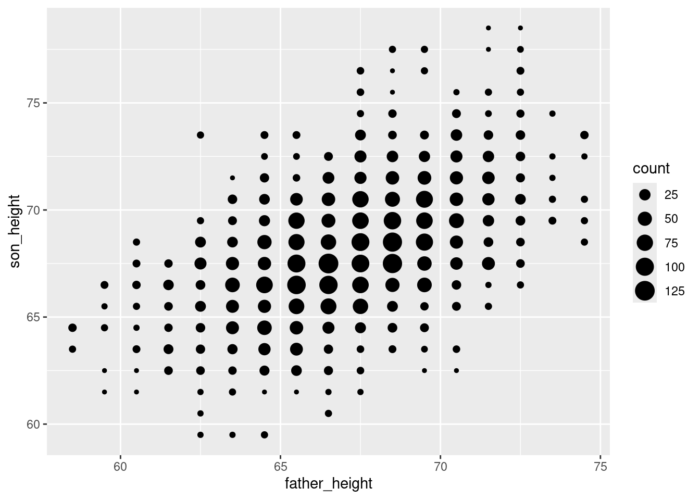
The result is a plot that helps remind us that we only have data values at 1-inch increments, but the size of the points helps us see our distribution better, because we can see clearly how there is more data in the “middle” points. This helps us avoid overplotting altogether!
You may or may not find this easier to understand than the jittered plots, but it’s a good option to know about. The advantage to this one is that it is a very faithful representation of the original data, so we see the clear “grid” arrangement of points representing the 1-inch increments of our data. But compared to the first scatterplot we made, it’s a lot easier to see that there’s a strong trend in the data, because we can see where points are concentrated much more clearly.
Plotting superimposed regression lines
Adding “manual” lines
Next, we might like to plot a regression line. There is a handy function for doing that in one step, but let’s examine how to plot lines “manually” first.
For example, let’s start by plotting a simple 1-to-1 line, which has a slope of 1 and an intercept of 0. This represents a line where the \(x\) and \(y\) values are exactly the same, because a slope of 1 means that a change in \(x\) results in the same change in \(y\) as we move up the line, and if it starts at [0, 0], then the \(x\) and \(y\) values will always be the same.
The ggplot2 package has a geom called geom_abline for this, and we can simply add it as a layer to our existing plot:
ggplot(pl_counts, aes(father_height, son_height)) +
geom_point(aes(size = count)) +
geom_abline(intercept = 0, slope = 1)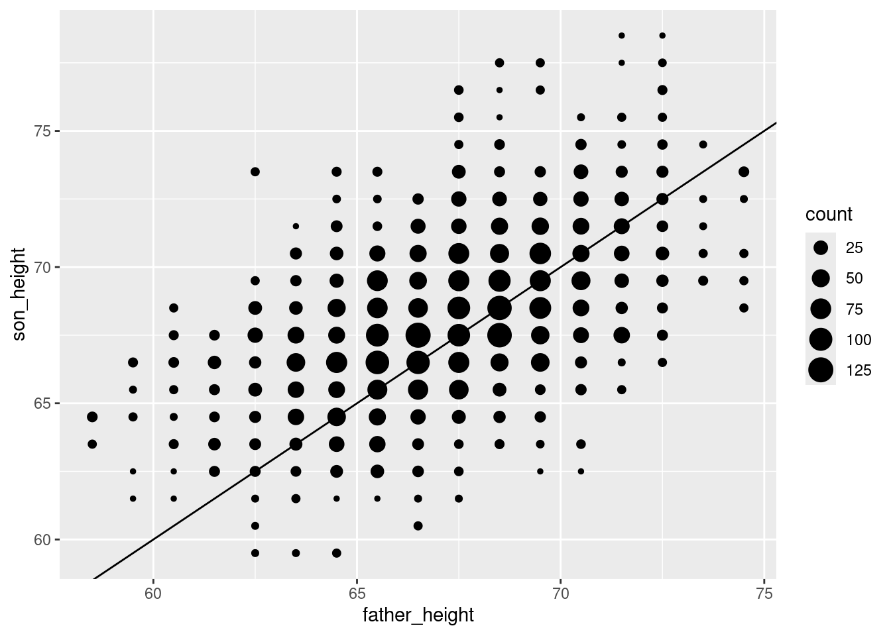
This is good, but a black line over black dots might be a little hard to see, so let’s make it a dashed blue line by changing the color and linetype properties of the line:
ggplot(pl_counts, aes(father_height, son_height)) +
geom_point(aes(size = count)) +
geom_abline(intercept = 0, slope = 1, color = "blue", linetype = 2)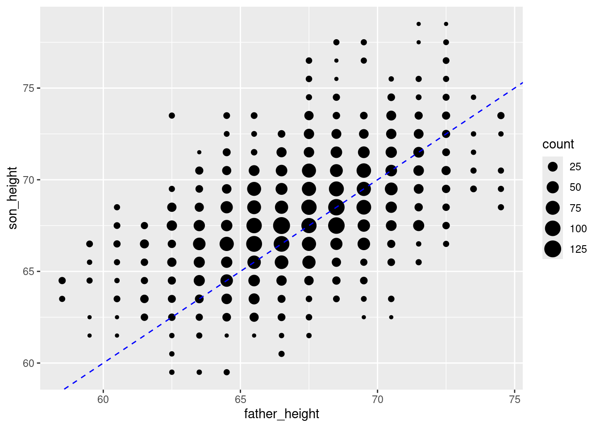
This simple line represents a hypothetical situation where we simply predict a son’s height to be exactly the same as his father’s. This is not the most accurate model. Once we fit our model, we will then have the slope and intercept parameters for the best-fit regression line. So to add the regression line for this data, all we need to do is run that analysis and plug in those values to the geom_abline().
The code for running a regression is covered in a separate tutorial, so I won’t explain the code here, but just use it to get our slope and intercept values from the regression. (Also, note that I’m using the full data, not the aggregated data.)
pl_regression <- lm(son_height ~ father_height, data = pl)
regression_intercept <- pl_regression$coefficients[1]
regression_slope <- pl_regression$coefficients[2]Now we can use these to add the regression line, which I will make red to help it stand out (the blue line is still a line with a slope of 1 and an intercept of 0, for reference):
ggplot(pl_counts, aes(father_height, son_height)) +
geom_point(aes(size = count)) +
geom_abline(intercept = 0, slope = 1, color = "blue", linetype = 2) +
geom_abline(intercept = regression_intercept,
slope = regression_slope,
color = "red")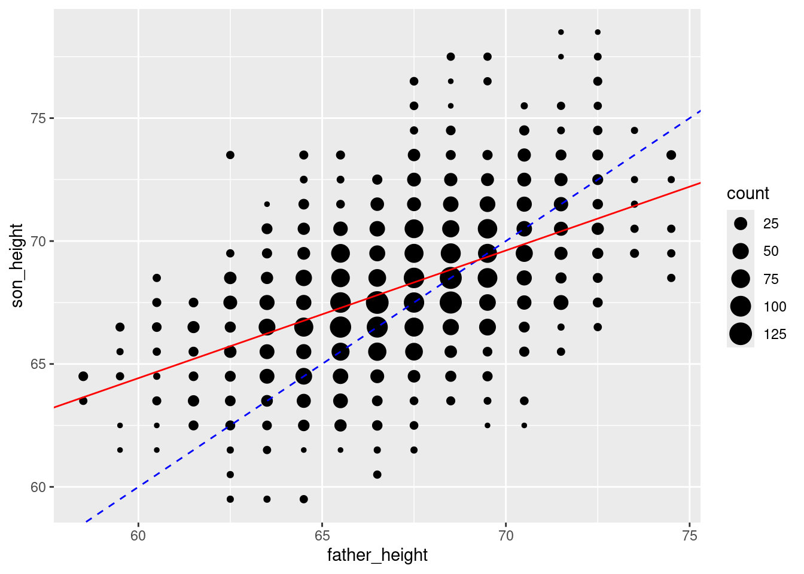
Using the geom_smooth function
Being able to add any line you want is very useful, especially when you know how to get the slopes and intercepts. However, there’s also a geom called geom_smooth() which can essentially calculate the regression line for you (as well as other smoothing options, if you want).
First I’ll show you the basic use of this geom, but this is not exactly correct for the current data, which I’ll explain next. And I’ll leave off our other lines for now.
The se = FALSE option removes a shaded confidence interval, since we haven’t discussed what that means in the course yet.
ggplot(pl_counts, aes(father_height, son_height)) +
geom_point(aes(size = count)) +
geom_smooth(method = "lm", se = FALSE)`geom_smooth()` using formula = 'y ~ x'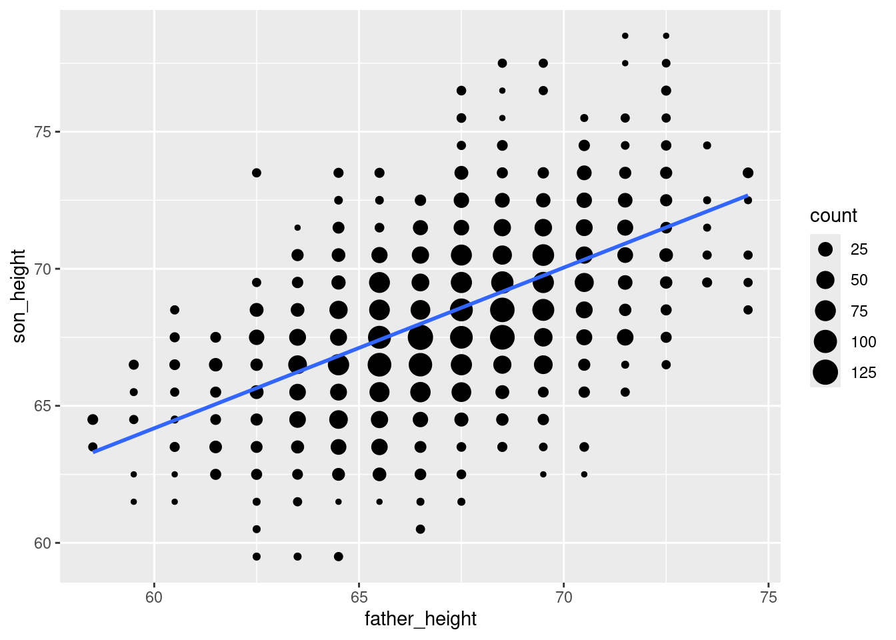
This is a lot more convenient than going through the steps of manually fitting a model, getting the slope and intercept, and using those to “manually” plot the line! So when you are exploring data using a scatterplot, geom_smooth() is a convenient way to look at what the regression line would look like.
However, there’s a problem with this specific case. The issue is that we’re adding this line to the aggregated data, because that’s what we’re plotting. What this means is that the regression line plotted by geom_smooth isn’t quite accurate, because it acts as if we only have one data point at each of the positions. In other words, since we aggregated the data and are only telling ggplot about our x and y variables, it doesn’t “know” that there are more real data points at some coordinates than others. But we know that there is more data in the middile of the distributions, so our regression line should ideally take that into account.
Luckily, we can have our cake and eat it, too, because we have the count of data points in a variable (count) in our data frame, so we can give this information to ggplot. Specifically, the geom_smooth function has a weights aesthetic3 to essentially have our count variable weight those values in the regression. This gives us the same result as if we had done the regression on the unaggregated data. I will plot the “wrong” regression line in red (i.e., the one that ignores our data counts), and the corrected weighted regression line in blue, so you can see the difference:
3 Recall that “aesthetic” is the jargon for a dimension of our data that we connect to the graph, which always needs to be inside an aes() function in our ggplot code.
ggplot(pl_counts, aes(father_height, son_height)) +
geom_point(aes(size = count)) +
geom_smooth(method = "lm", se = FALSE, color = "red") +
geom_smooth(aes(weight = count), method = "lm", se = FALSE, color = "blue")`geom_smooth()` using formula = 'y ~ x'
`geom_smooth()` using formula = 'y ~ x'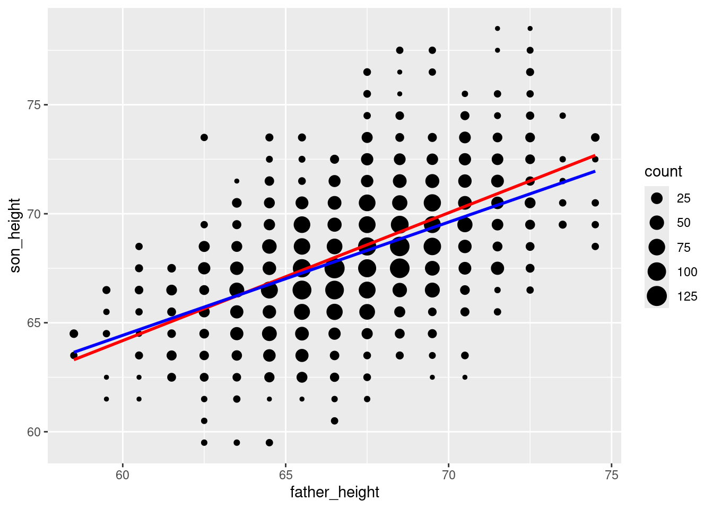
It turns out not to be a huge difference in this example, but you can see that the blue line is a little less steep than the red line. The point here is that if you want to plot regression lines, geom_smooth with the method = "lm" option is very convenient, but when in doubt, you can always fall back on figuring out the actual slope and intercept parameters and plotting those with geom_abline. As always, carefully thinking about what you’re doing should be part of your process!
Other options and tips
You may have noticed that the plots in the readings sometimes look a little different than the plots you create. One of the nice things about the ggplot2 package is that the default appearance of graphs looks pretty good, but you also have a lot of control over the final appearance if you want to tweak things.
The downside is that it can get very fiddly to make certain kinds of adjustments. It’s beyond the scope of this course to do a deep-dive into all the various options, but I’ll show you a few of the easier things you can do here.
Themes
First, there’s a powerful theme system in ggplot2, which is a way of compiling various options into a unified theme. Luckily, ggplot2 comes with a few nice themes built in to choose from. Just compare the following:
ggplot(pl, aes(father_height, son_height)) + geom_jitter(alpha = .1) +
theme_gray()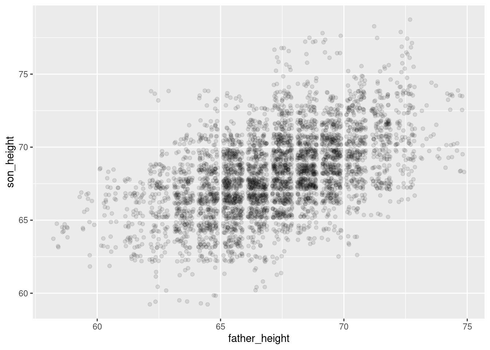
ggplot(pl, aes(father_height, son_height)) + geom_jitter(alpha = .1) +
theme_void()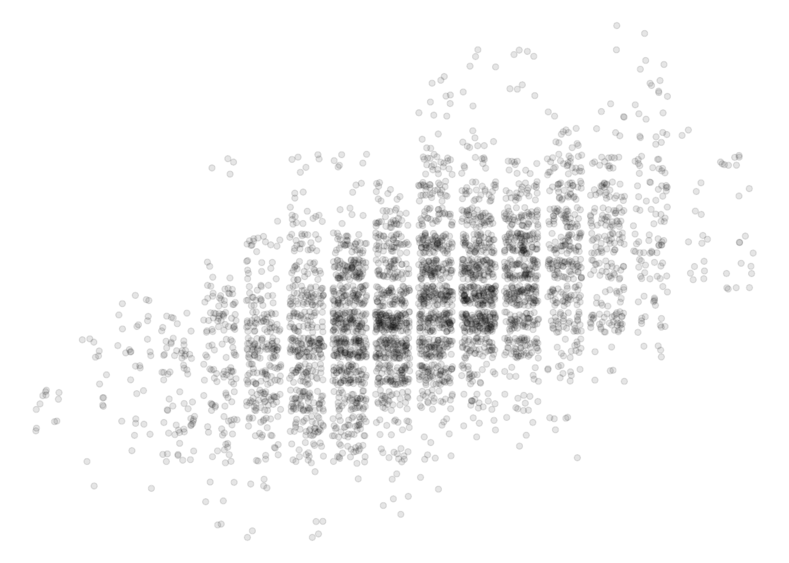
ggplot(pl, aes(father_height, son_height)) + geom_jitter(alpha = .1) +
theme_minimal()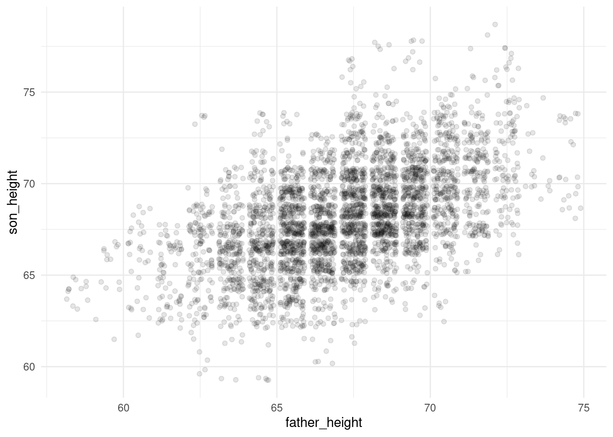
ggplot(pl, aes(father_height, son_height)) + geom_jitter(alpha = .1) +
theme_classic()ggplot(pl, aes(father_height, son_height)) + geom_jitter(alpha = .1) +
theme_bw()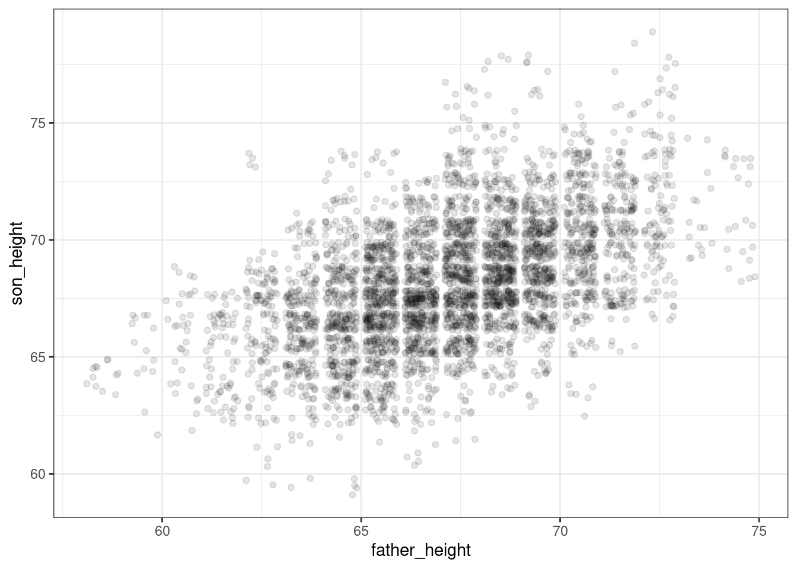
ggplot(pl, aes(father_height, son_height)) + geom_jitter(alpha = .1) +
theme_dark()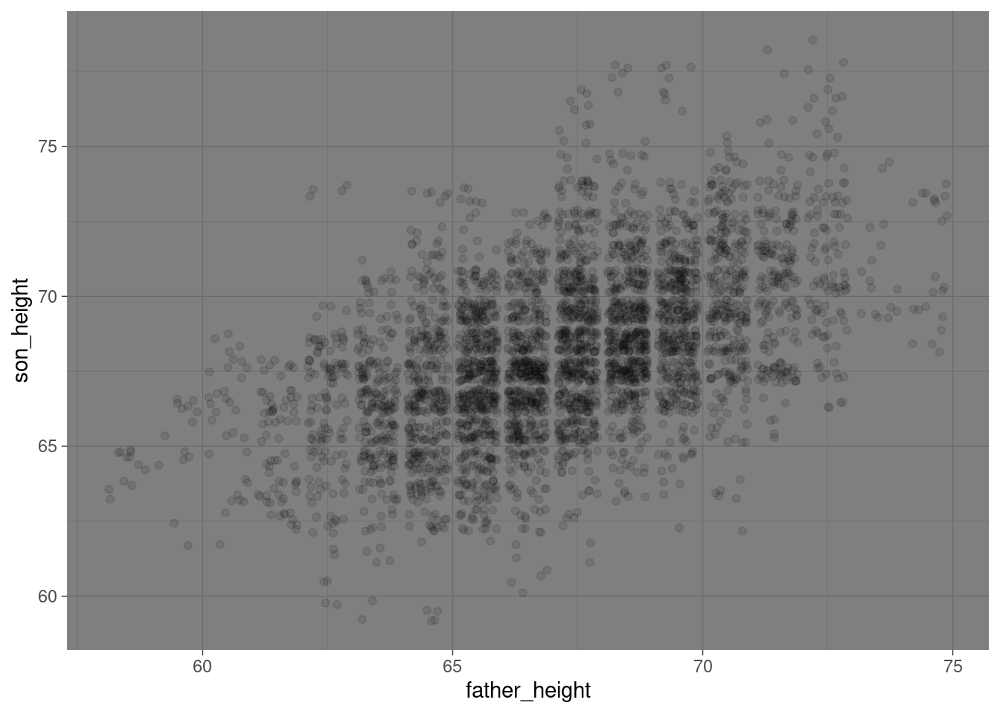
Sometimes just picking a good theme can go a long way towards making your plots more readable or enjoyable to look at.
In addition to these “built-in” themes, there is a general theme function that will allow you to override any of the settings in the built-in themes. If you ever find yourself wanting to tweak any parts of the plot that aren’t connected to the data themselves, it’s often the case that it’s a setting or parameter that you can tweak inside theme. I have the following page bookmarked and I frequently refer to it myself whenever I am trying to fiddle with some of the nitty-gritty of a plot:
https://ggplot2.tidyverse.org/reference/theme.html
Axis and labels and plot title
Another easy thing to do is to adjust the axis labels. Sometimes you find yourself wanting column names that are easy to work with in R (no spaces, lowercase, etc.), but then they are ugly to look at in a plot, because by default, ggplot2 uses the names of the columns when it labels things like axes, legends, etc.
Fortunately, it’s very easy to tweak this. So for example, I like having simple column names like father_height and son_height in my data, but they are not pretty axis labels. Here’s how you can adjust those, and how to add a “title” to the plot:
ggplot(pl_counts, aes(father_height, son_height)) +
geom_point(aes(size = count)) +
xlab("father height (inches)") +
ylab("son height (inches)") +
ggtitle("Data from Pearson & Lee (1903)")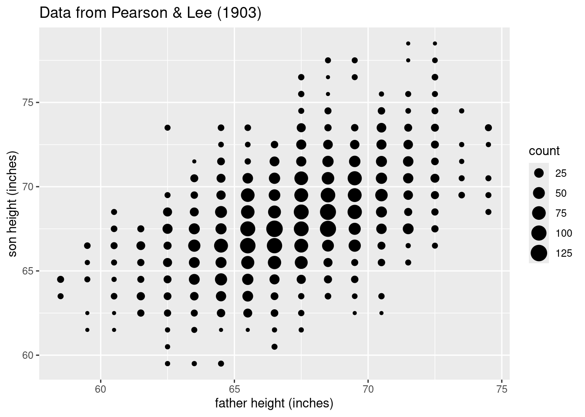
Summary
Scatterplots are a powerful tool for visualizing the relationship between two numeric (continuous or interval) variables in your data. Review the discussion of Anscombe’s Quartet in the Unit 3 reading if you need any more convincing that visualizing your data is not just a “nice-to-have” step in regression analysis – it’s absolutely crucial. This process should come before you even bother fitting a model, because a good scatterplot may help you realize that fitting a model may be a waste of time or even misleading without some additional work (like transformation, etc.).